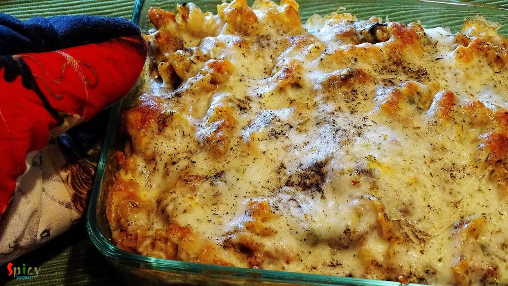

Simple and Easy Recipes
Posts on 'bake'

Veg Recipe
May 31, 2018
"Doi" is a very popular dessert among Bengalis. But "bhapa doi" is a very traditional Bengali dessert. My grandma used to make this in pressure cooker and it tastes super delicious. My 1st compliment on this dish was "Bengali Cheesecake" from my man :) .... So, please try this and impress your family members.


Nonveg Recipe
May 3, 2016
Few months back I saw a recipe of this 'dhaniya murgh kabab' with boneless chicken in facebook. The picture caught my eyes and then I made my mind to give it a try. But I actually got time to make it last weekend as I already had so many recipes in my drafts and to-do list. There were few changes I make with the recipe and we both got very much impressed by it's result. Smokey flavour of any type ...

Nonveg Recipe
Feb 12, 2016
I am not a fan of dessert, but do love cakes and brownies. Some of my friends are always preparing desserts and that always keep inspiring me, so this time I thought of preparing something. As this was my first time on brownie, didn't want to take any risk. So, I've made these chocolate brownies with 'Betty Crockers' brownie mix. The result was fantastic 'he' didn't find any difference between the ...

Nonveg Recipe
Jan 27, 2016
I have tried some middle eastern platters in couple of restaurants at Austin. I have fallen in love with their kebabs. Once you tasted it, you will never forget that unique taste. I also love their shawarma chicken. So, I reasearched how to make those kebabs at home and the easiest one is this 'turkish kebab'. I also mentioned it as 'sish kebab' because in several places I found the same recipe bu ...

Veg Recipe
Nov 28, 2015
I think almost every Bengali is familiar with this name. I love 'posto' or poppy seeds in any form. I made this dish on yesterday lunch along with some steamed rice. The fresh flavour of mustard oil and poppy seed paste always makes me crazy. I made it in microwave but you can also make this in oven. Try this in your kitchen and let me know how it turns out.

Nonveg Recipe
Nov 26, 2015
Its true that I love eating pasta after coming usa. In India I was more fond of noodles, ramen or maggie. But recently I experimented couple of recipes on pasta and they turned out really well. I love my pasta on spicy side, that's why I mentioned it in the title. After baking with cheese, the taste of this dish became phenomenal. If you do not want to bake or use cheese, then make this dish witho ...

Veg Recipe
Nov 24, 2015
'Diwali' is the celebration of light and sound. Its been two years I am away from home (Kolkata). My papa used to buy me lots of crackers a day before diwali, we toast them in sunlight and in the evening of diwali my (maternal) uncle bought me some more crackers for his 'vagni'. Then around 8 pm me and my papa used to decorate our roof with candles and after that we started doing fireworks with ou ...

Nonveg Recipe
Oct 3, 2015
Wanna try something new ? Just follow this recipe and get perfect starter for your friday evening. These baked leg pieces will never fail to satisfy your apetite. Try this and surprise your family and guest.
Contact Us
Guest Post
Subscribe RSS Feed
User Agreement
Public Presence
Feedback
Free Games
Home
Recipes
Categories
Images
Food Plating
About Me
Guest Post
Subscribe RSS Feed
User Agreement
Public Presence
Feedback
Free Games
Home
Recipes
Categories
Images
Food Plating
About Me
What we offer?
- Recipe Development
- Restaurant & Food Review
- Food Photography
- Website, Blog & Application Development
- UX / UI Designing
- Sponsorship & Advertisement
Contact us via Email
contact@spicyworld.in
Who we Are?


Amitava Ghosh
Website & CMS Designer, Developer and Architect.
Website & CMS Designer, Developer and Architect.